Updating lidar DSM by patching
- edge between lidar and UAS SfM DEMs

Center for Geospatial Analytics,
North Carolina State University
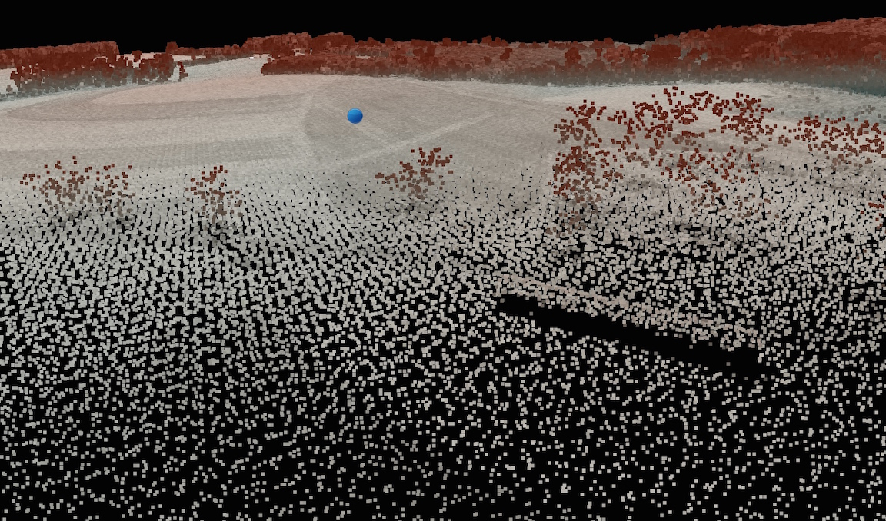
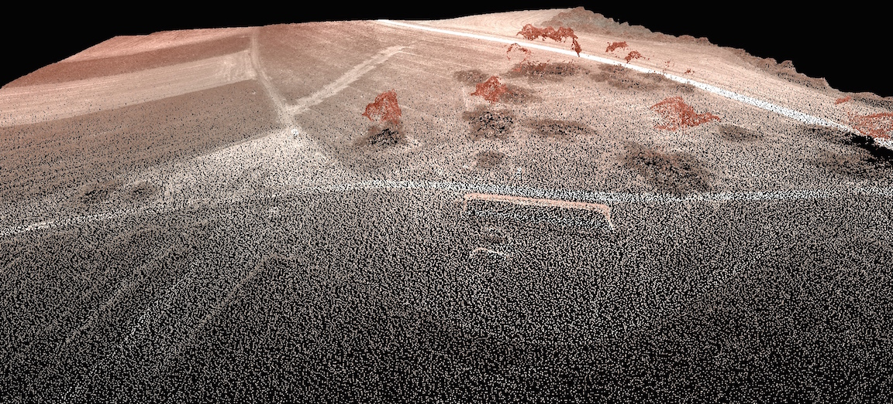
Different distribution of errors and distortions: Lidar and SfM provide independent set of measurements.
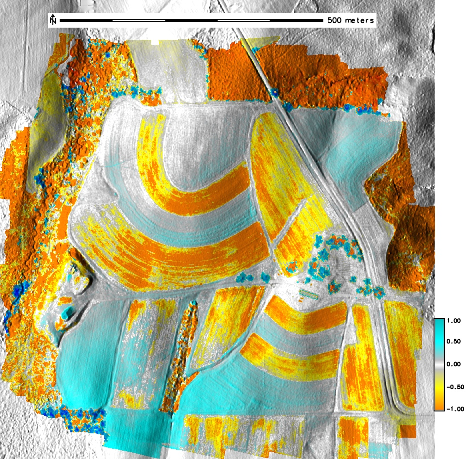 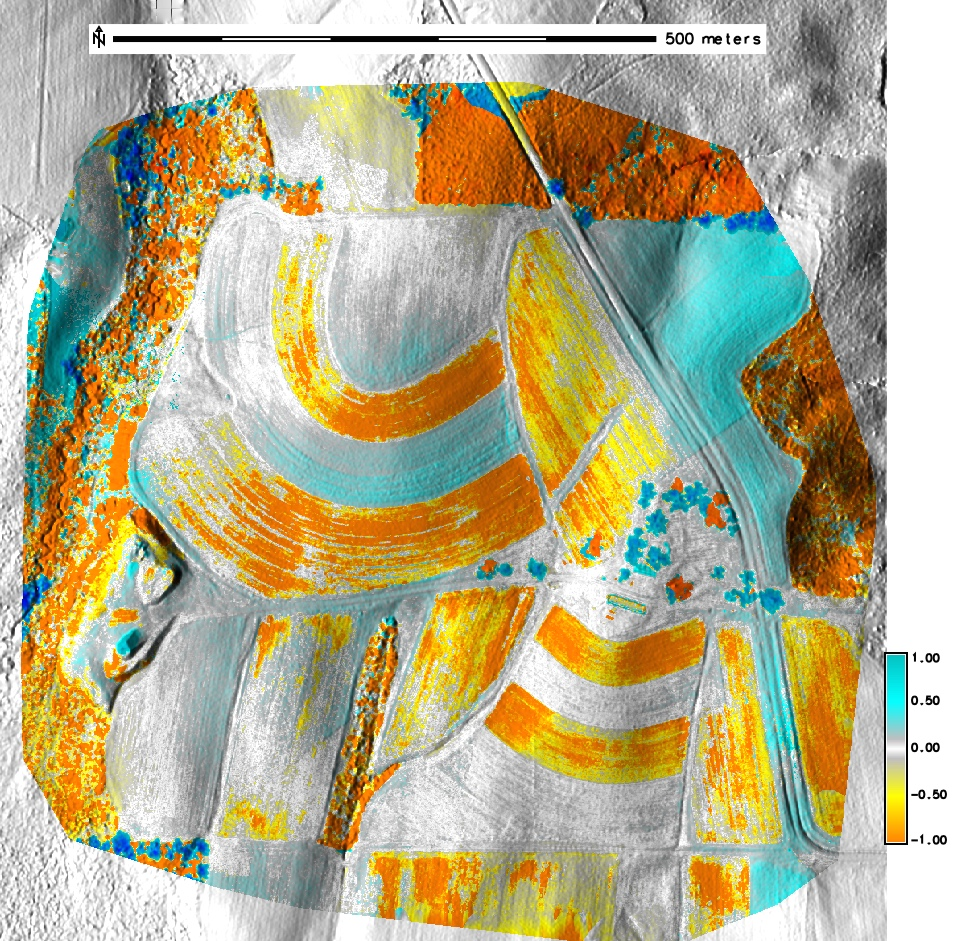
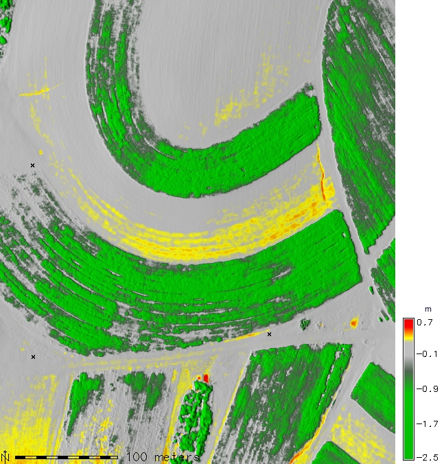 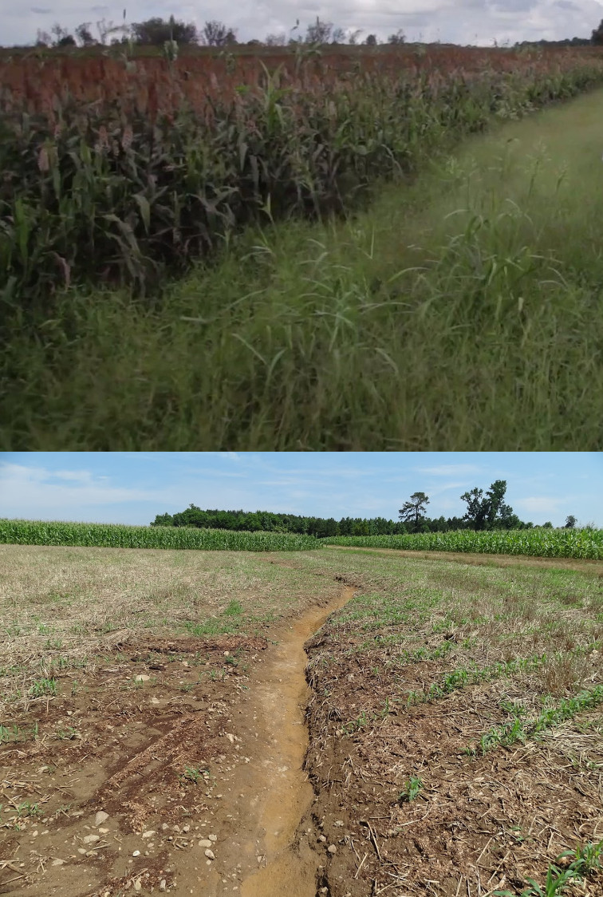
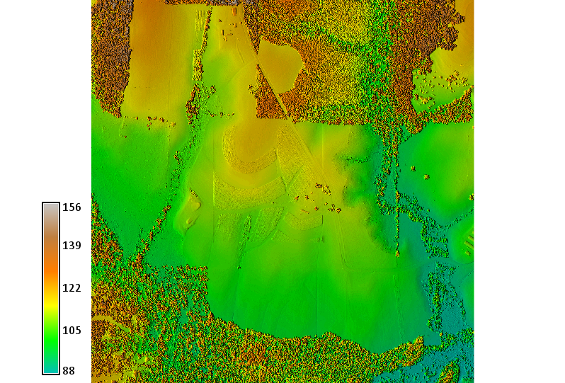 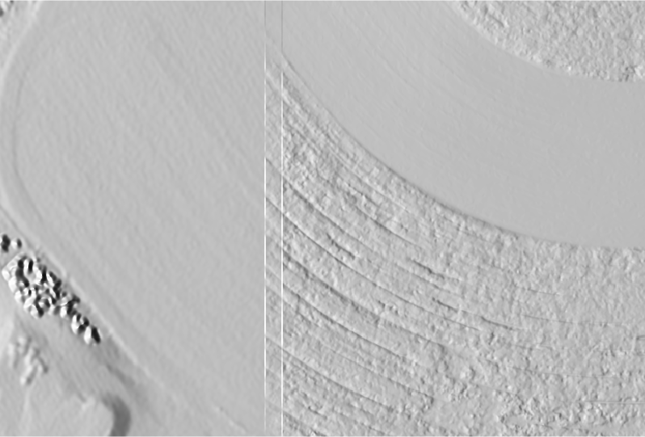
images by Brendan Harmon
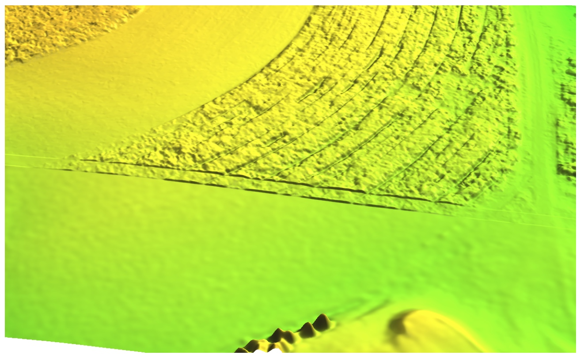 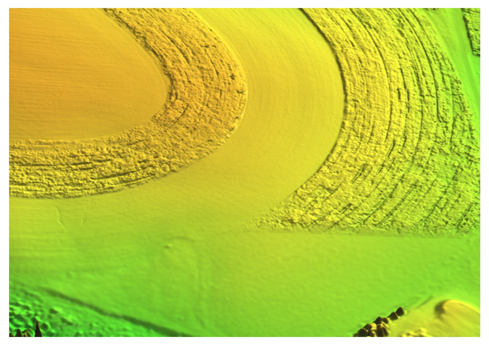
Linear combination of elevation surfaces $z_{A}$ and $z_{B}$ with weights given by overlap width $s$ and distance $d$ to the edge of $z_{A}$:
$$ z_{AB} = z_{A} w + z_{B}(1 - w), \\[10pt] w = f(s, d) = \begin{cases} \frac{d}{s} & 0 \leq d < s \\ 1 & d \geq s \end{cases} $$
By taking into account spatially variable differences $\Delta z$ between DEMs $A$ and $B$ along the overlap:
Simply patched vs. fused UAS and lidar DSMs with overlap width $s = 20\ m$
UAS-derived DSM's vegetated parts replaced with lidar DEM.
Spatially variable overlap for UAS SfM and lidar fusion based on elevation differences
Microtopography captured at ultrahigh resolution by UAS SFM poses special challenges to flow routing:
Stochatistic method for solving flow continuity equations


Crop surface creates barrier leading to artificial ponding
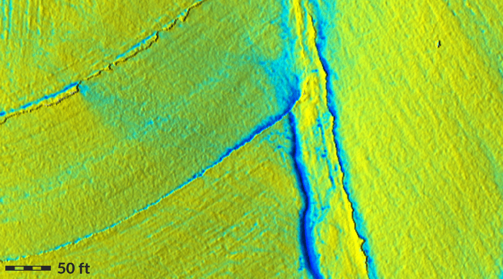 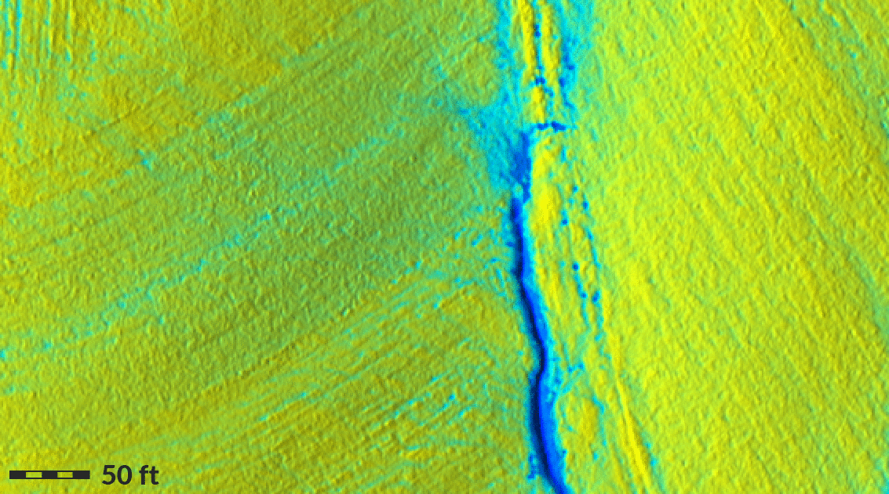
Replacing crop surface by lidar bare ground: patching creates artificial flow pattern, smooth fusion improves accuracy of flow distribution
Water flow on DSM created by simple patching vs. smooth patching
Water flow on DSM vs. bare ground fused from UAS DSM and lidar DEM
What is scripting good for?
Why Python?
Python shell for one-line statements, editor for scripts
import grass.script as gs
gs.run_command('g.region', raster='elevation')
gs.run_command('r.neighbors', input='elevation',
output='elev_smoothed',
method='average', flags='c')
g.region raster=elevation
r.neighbors input=elevation output=elev_smoothed method=average -c
gs.read_command('r.univar', map='elev_smoothed', flags='g')
n=1142647 null_cells=207394 cells=1350041 min=110.196601867676 max=128.924560546875 ...
gs.parse_command('r.univar', map='elev_smoothed', flags='g')
{'min': '110.1966018', 'max': u'128.9245605', 'cells': u'1350041', ...}
gs.parse_command('r.univar', map='elev_smoothed', flags='g')['range']
18.72795867
gs.write_command('v.in.ascii', input='-',
stdin='%s|%s' % (635818.8, 221342.4),
output='view_point')
gs.mapcalc("elev_strip = if(elevation > 100 && elevation < 125,
elevation, null())")